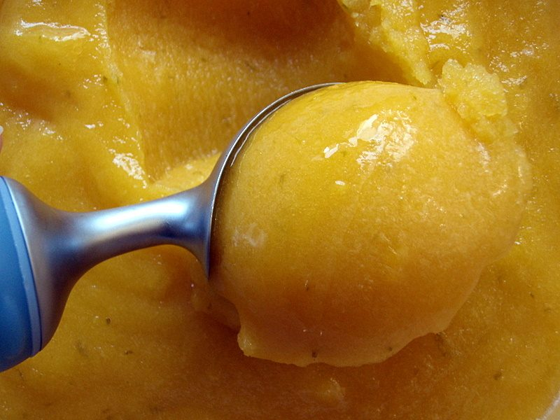
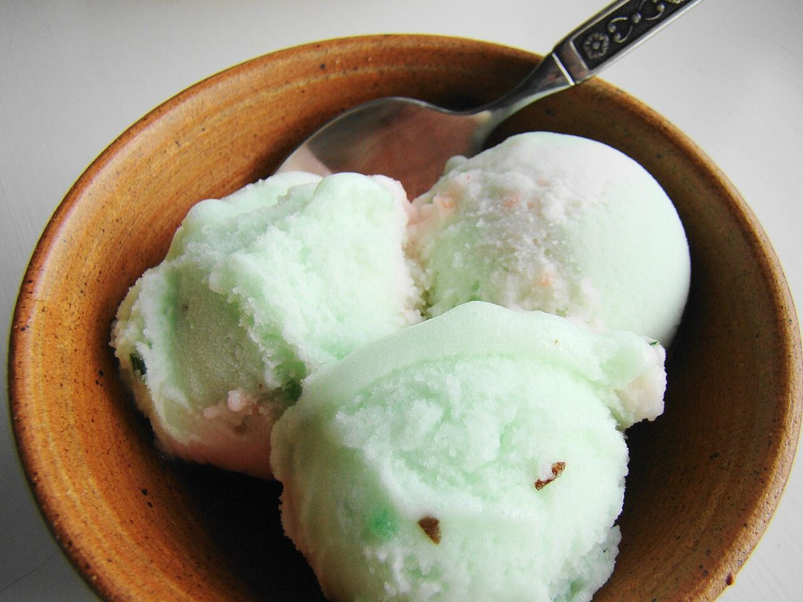
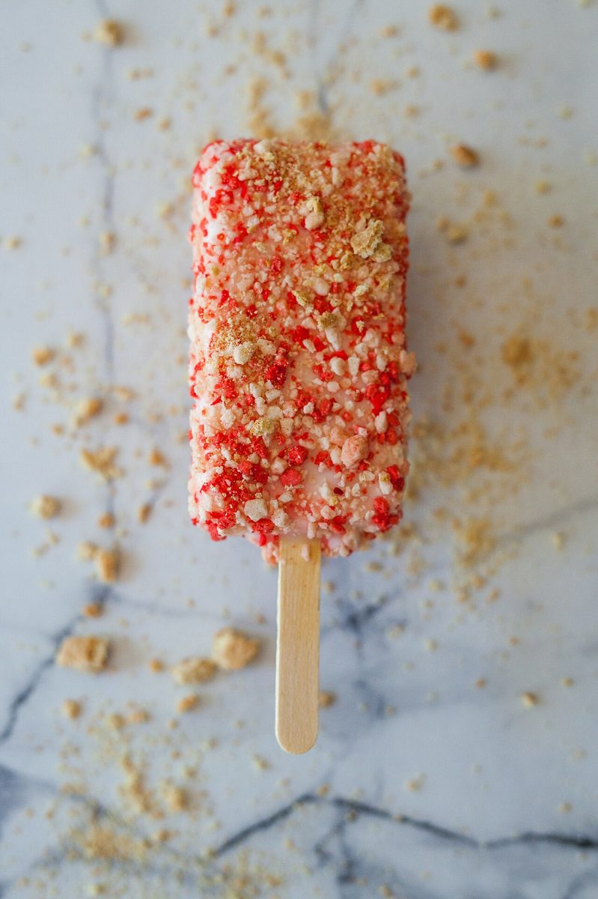
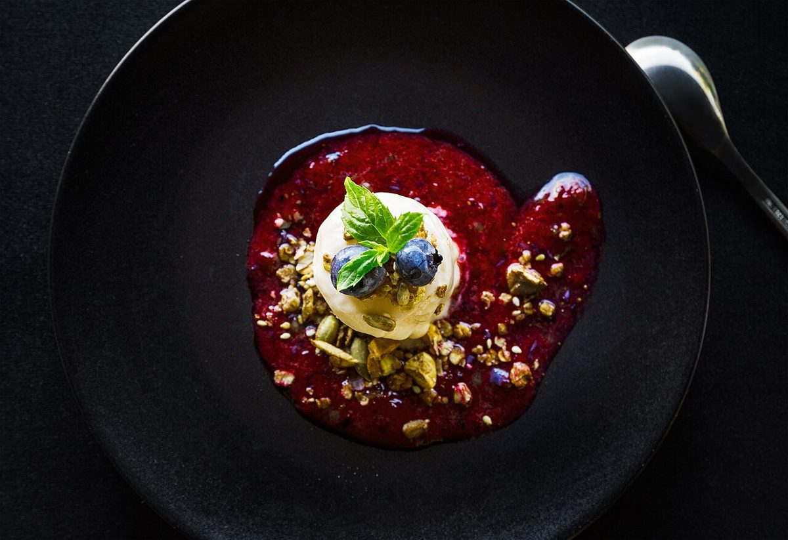

宮崎県小林市・ケーキ / ジェラート / ヨーグルト / 焼き菓子
ひと切れ、ひと口を、
持ち帰って味わう。
Demは、小林市でケーキ・自家製ジェラート・ヨーグルト・焼き菓子をテイクアウトでお届けするお店です。
お店のこと
テイクアウトで楽しむ、小林の甘いひととき。
Instagramのプロフィールによると、Demは宮崎県小林市のお店で、ケーキ、ジェラート、ヨーグルト、焼き菓子を扱い、自家製ジェラートが紹介されています。ご利用はテイクアウトのみ、お支払いは現金のみとされています。
情報源: Instagram @dem.r2108(プロフィール)
店名の意味・オープンの経緯・オーナーの想いは確認できなかったため記載していません。見出しなど上記事実以外の言い回しは制作側の表現です。
メニュー
ケーキ、ジェラート、焼き菓子。
下の写真はフリー素材のイメージです。実際の商品ではありません。品目・価格・営業時間・定休日は準備中です(最新情報はInstagramをご覧ください)。








| 営業時間 | 準備中 |
|---|---|
| 定休日 | 準備中 |
| 価格 | 準備中 |
| 電話 | 準備中 |
| ご利用 | テイクアウトのみ / お支払いは現金のみ(Instagramより) |
口コミ
お客様の声(イメージ例)
イメージ例
仕事帰りに寄って、ジェラートとケーキを持ち帰りました。家でゆっくり食べる時間が楽しみになります。
イメージ例
焼き菓子を手みやげにしました。小さな箱に入れてもらえると渡しやすいですね。
イメージ例
ヨーグルトのさっぱりした味わいが好きです。季節ごとの新しい味も気になります。
口コミは制作側が作成したイメージ例であり、実在のお客様の声ではありません。